Guía de marca
APROVECHO conecta comercios con excedentes aptos y consumidores cercanos, y ayuda a medir y reducir el desperdicio. Esta guía es la fuente para app, landing, videos y piezas físicas.
Logo
Profesionalizamos el logo actual (D-011): se mantiene el badge circular, la base verde y el slogan; se redibujó en vector y el ícono ambiguo se reemplazó por una medialuna integrada a la flecha circular (D-018): se lee en un segundo, es del rubro n.º 1 de excedentes y muy argentina. Una sola marca: sin hojas ni otros símbolos.
Por qué se ve distinto de la categoría: Too Good To Go, Cheaf y Buen Provecho usan verde + hoja. Nosotros sumamos el acento corteza y un símbolo propio del producto.
Versiones
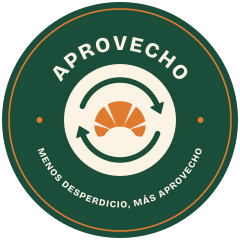
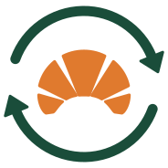
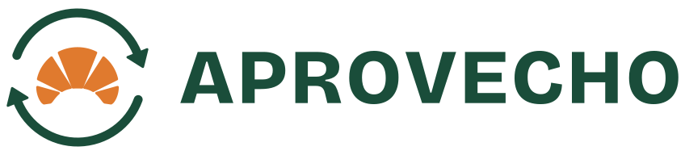
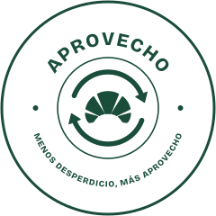
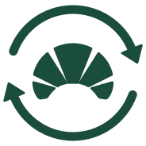
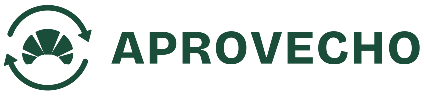
Cuándo usar cada una: Badge (≥ 64 px): portadas, bolsa, sticker, avatar. Horizontal: barras de navegación, firmas, documentos. Isotipo: espacios chicos y cuadrados, sellos. Wordmark: cuando el símbolo ya aparece cerca. Mono: una tinta (sellos, fax, grabado). Negativo: sobre verde o fondos oscuros. Íconos: app-icon-1024.svg (el sistema aplica la máscara) y favicon.svg (isotipo simplificado de 3 gajos).
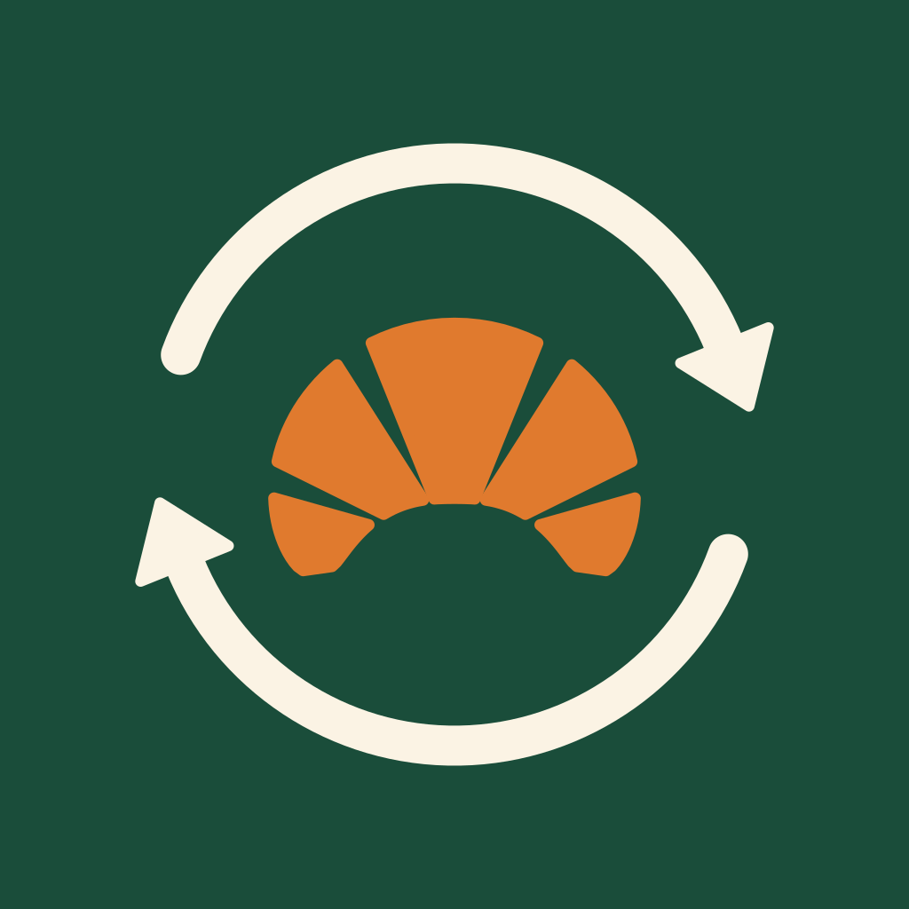
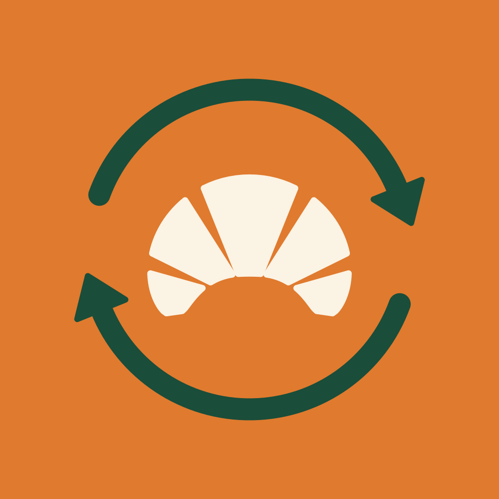
Área de resguardo y tamaño mínimo
x = la altura de la medialuna. Dejá al menos x libre en los cuatro lados. Nada de texto, bordes ni imágenes dentro de ese margen.
| Versión | Mínimo digital | Mínimo impreso |
|---|---|---|
| Badge | 64 px | 20 mm |
| Horizontal | 96 px de ancho | 30 mm |
| Isotipo | 24 px | 8 mm |
| Wordmark | 80 px de ancho | 25 mm |
| Favicon | 16 px | — |
Color
Verde bosque como base y un acento cálido propio, corteza (D-017): sale del producto (medialuna, pan tostado, caja kraft) y es lo que nos hace reconocibles. Proporción de uso sugerida: 60% crema / 25% verde bosque / 10% corteza / 5% menta.
Reglas
- CTA: fondo corteza + texto ink (nunca texto blanco sobre corteza: 3,0:1, no cumple AA).
- Texto de acento sobre claro: usar corteza fuerte (#A9490B), no corteza.
- El crema es más cálido y menos amarillo que el del plan (#F5F5DC → #FBF3E4).
- Medido / Estimado: código que no depende solo del color (ver abajo).
Código de transparencia
Medido: etiqueta sólida verde con sello. Estimado: contorno punteado, ícono punteado y la palabra. Se distinguen en escala de grises. Es parte de la marca (pilar Honestidad) y se usa en toda cifra de impacto.
Contraste verificado (WCAG AA)
| Par | Uso | Ratio | Estado | |
|---|---|---|---|---|
| Aa | text sobre cream | Texto corrido sobre fondo | 11,46:1 | ✓ AA |
| Aa | forest sobre cream | Títulos y enlaces primarios | 8,79:1 | ✓ AA |
| Aa | cream sobre forest | Texto sobre bloques verdes / botón primario | 8,79:1 | ✓ AA |
| Aa | ink sobre crust | Texto del botón de acento (CTA) | 5,17:1 | ✓ AA |
| Aa | crust-strong sobre cream | Texto de acento sobre crema | 5,22:1 | ✓ AA |
| Aa | crust-strong sobre surface | Texto de acento sobre tarjeta | 5,76:1 | ✓ AA |
| Aa | forest sobre mint | Texto sobre tarjeta menta | 8,96:1 | ✓ AA |
| Aa | text-muted sobre cream | Texto secundario | 5,11:1 | ✓ AA |
| Aa | surface sobre medido | Etiqueta Medido | 9,69:1 | ✓ AA |
| Aa | estimado sobre crust-soft | Etiqueta Estimado | 4,65:1 | ✓ AA |
| Aa | success sobre surface | Éxito sobre tarjeta | 5,13:1 | ✓ AA |
| Aa | error sobre surface | Error sobre tarjeta | 6,54:1 | ✓ AA |
| Aa | crust sobre forest | Acento como gráfico sobre verde (≥3:1) | 3,23:1 | ✓ AA |
| Aa | forest sobre surface | Títulos sobre tarjeta | 9,69:1 | ✓ AA |
Tipografía
Bricolage Grotesque (títulos y wordmark): grotesca con carácter y terminaciones amables; reemplaza a Montserrat para diferenciarnos. Inter (texto e interfaz): legibilidad en celular y cifras tabulares para los dashboards. Ambas en Google Fonts, gratis para web y app.
Tono
Personalidad: pícara, práctica, honesta, de barrio, optimista. Arquetipo Vecino (+ Sabio en B2B). Voz única en español rioplatense con voseo; cambia el tono por audiencia. El desperdicio se comunica como oportunidad, no desde la culpa. Detalle completo en marca/plataforma-de-marca.md.
- "Medialunas del día, a mitad de precio y a la vuelta de tu casa."
- "Sacale una foto a lo que te sobró. Nosotros armamos los packs."
- "Huella de carbono asociada estimada."
- "¡Salvá el planeta comprando sobras!"
- "Plataforma omnicanal de gestión de mermas con IA."
- "Evitaste X kg de CO₂."
Reglas: voseo siempre · CTA con verbo al principio y máx. 3 palabras · "pack" en minúscula · "APROVECHO" en mayúsculas · números en formato argentino (1.234,5 · 50%) · slogan: "Menos desperdicio, más aprovecho".
Iconografía
Línea, trazo 2 px, puntas y uniones redondeadas, grilla de 24 px, color de herencia (verde bosque; corteza solo para el estado activo). Estilo Lucide/Phosphor; este set mínimo ya está dibujado en componentes.html.
Indicador de plan: 1, 2 o 3 marcas (Base, Smart, Intelligence), no un color por plan.
Fotografía
- Real, cálida, de barrio: mostradores, bandejas, cajas kraft, manos de comerciantes.
- Luz de atardecer (17–21 h, la franja clave).
- Comida apetitosa y del día.
- Personas reales y diversas: comerciantes de 40–55, consumidores de 20–35.
- Tachos de basura protagonistas ni comida en mal estado.
- Planetas o manos sosteniendo el mundo.
- Hojas verdes decorativas.
- Poses de banco de imágenes.
Dónde conseguirlas (gratis, D-023): Unsplash o Pexels; buscar "panadería de barrio", "medialunas", "caja kraft", "mostrador de cafetería", "atardecer en la vereda". Revisar la licencia de cada foto. Si se generan con IA: pedir validación antes y cuidar manos, texto y logos falsos.
Tratamiento: color natural, ligero tinte cálido, sin filtros fuertes. Sobre foto, el logo va en negativo dentro de una banda verde bosque o con overlay de 40% de ink.
Ilustración
Personajes-alimento simples (medialuna protagonista, porción de torta, empanada) para el humor B2C: stickers, estados vacíos, redes. Trazo y formas redondeadas coherentes con el isotipo; paleta limitada (bosque, corteza, crema). En B2B, diagramas limpios de la escalera Recuperá → Medí → Anticipá. Pendiente: dibujar el set cuando arranquen landing y video.
Usos incorrectos
Aplicaciones
Sticker de vidriera, cartel de caja, bolsa y posteo de Instagram: ver mockups (PNG en aplicaciones/png/). Piezas UI: componentes base. Tokens: tokens.css y tokens.json.